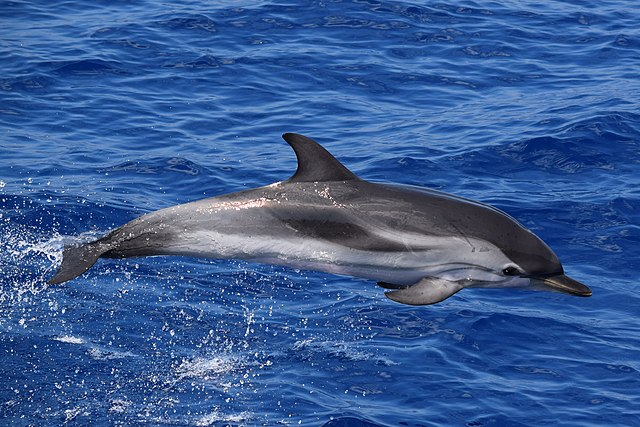
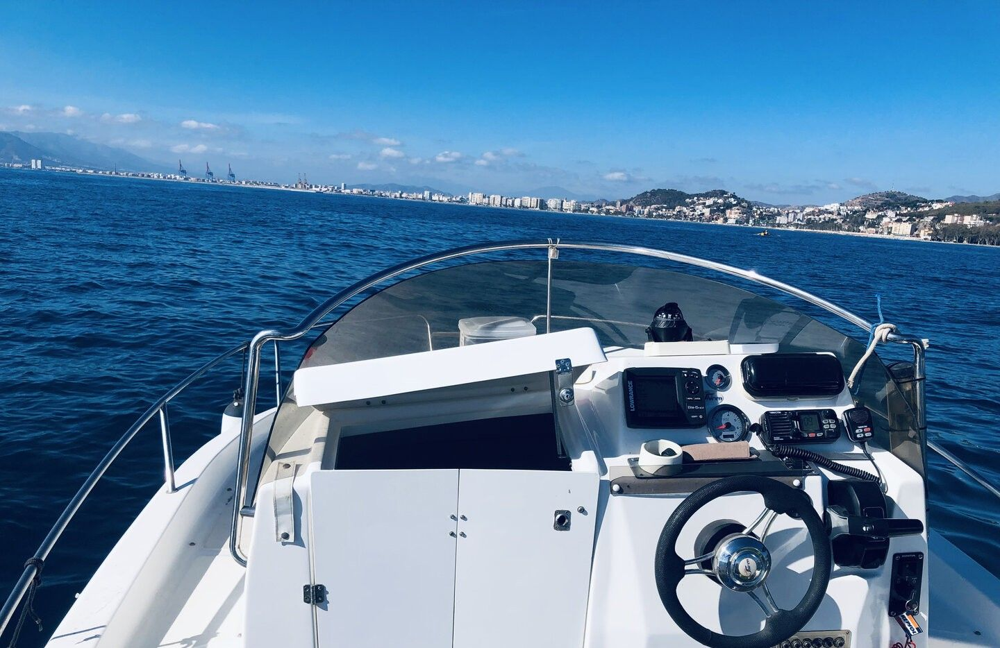

Ver delfines en Málaga desde un barco privado
Salimos a primera hora, con el mar en calma, a buscar delfines unas millas mar adentro. Un barco, vuestro grupo y el motor parado cuando aparecen.
Cómo buscamos los delfines
A primera hora el mar suele estar más quieto y es más fácil ver las aletas. Navegamos unas millas mar adentro y vamos parando a mirar.
Cuando aparecen, reducimos la velocidad, apagamos el motor si se acercan y dejamos que sean ellos quienes decidan. No los perseguimos y guardamos la distancia que marca la normativa de protección de cetáceos. Si hay suerte, nadan junto al barco.
Son animales salvajes: no se puede garantizar verlos. De vuelta, si apetece, paramos en una cala a bañarnos.
Cómo suele ir
- Salida a las 8:30 con el mar en calma
- Navegación mar adentro buscando señales
- Observación con el motor al ralentí o parado
- Baño en una cala de vuelta, si apetece


Preguntas frecuentes
¿Se garantiza ver delfines?
No. Son animales salvajes y no siempre aparecen. No verlos no da derecho a devolución, porque la salida se hace igual.
¿Por qué se sale tan temprano?
A primera hora el mar suele estar más en calma y las aletas se ven mejor.
¿Nos podemos acercar a ellos?
Nos acercamos despacio y sin perseguirlos, guardando la distancia que marca la normativa. Si se acercan ellos, paramos el motor.
¿Pueden venir niños?
Sí, de cualquier edad, con chaleco cuando el patrón lo indique y siempre con un adulto.
¿Y si hace mal tiempo?
El patrón decide si se puede salir con seguridad según el parte y el estado del mar. Si la salida se cancela por el tiempo, eliges entre otra fecha o la devolución entera de la señal.
¿Cómo se paga?
Al reservar pagas online una señal de 20 € por persona, que se descuenta del total. El resto se paga en efectivo el día de la salida, antes de embarcar.